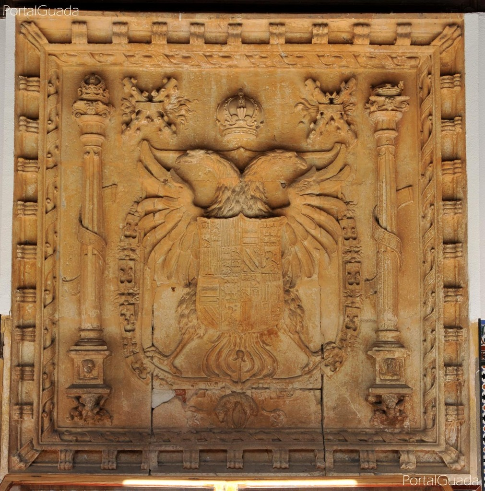
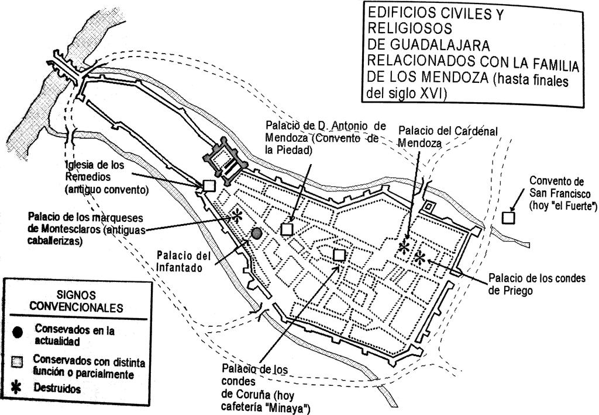
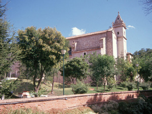

Está época está claramente marcada por la influencia del cardenal Mendoza y su clan en el que acumulan un gran poder político. En gran parte gracias a la ayuda a las guerras en las que embarcaba Castilla, como la toma de Granada y ya con Carlos V y Felipe II en algunas más campañas. En esta época la ciudad cambia completamente de cara, apareciendo multitud de palacios y casas solariegas debido a la gran cantidad de nobles que habitan en ella. Prueba de ello es El Palacio del Infantado levantado en esta época y atribuible al gran poder de los Mendoza, además la expulsión de los judíos en España dará lugar a un cambio en gran parte de la ciudad.
Frente a la iglesia de Santa María se situaría el palacio del cardenal Mendoza (Pedro de Mendoza), edificio que desapareció y que era una de las obras de referencia de la ciudad del renacimiento en España. Cerca de este se encontraba el de su sobrino, Antonio de Mendoza, conservado actualmente que funciona como un instituto de enseñanza secundaria, Liceo Caracense, como se puede observar en la imagen de la derecha. A la muerte de éste fue legado a su sobrina que convertiría el palacio en un convento, y en el que se edificaría junto a él una capilla. En el queda enterrada y queda su nombre como capilla del convento de la piedad (img dcha.).
Cabe resaltar que este palacio actualmente alberga el famoso escudo del emperador Carlos de Habsburgo que en un principio era símbolo de sometimiento en las ciudades castellanas que se opusieron a ciertos impuestos. Esto sucedió en la guerra de los comuneros en los que la comarca de Castilla perdió sus privilegios y fueros por Carlos V, como se le conoce debido a su título de emperador, único rey en España poseedor de tal título comprado "a base de talonario" a los estados que poseían voto, que iban desde Holanda a estados pequeños de Alemania pasando por las regiones del Norte de Italia.
 Este escudo en un principio fue colocado en la puerta del Alcázar que es de donde partió la revuelta en el siglo XV y donde fueron ejecutados sus instigadores. El mejor ejemplo de este escudo se encuentra en la puerta de la Bisagra en Toledo, ciudad que protagonizo el mayor alzamiento contra Carlos V y donde este asentaría su residencia finalmente. Posteriormente tras la destrucción del alcázar pasaría a ser colocado en la puerta del Mercado de Guadalajara que se encontraba en la actual plaza de Santo Domingo. Una vez destruidas las murallas en el siglo XVIII para ampliar la ciudad fue guardado en el convento de la Piedad para ser protegido de futuros acontecimientos. Gracias a ello hoy en día se conserva en muy buen estado y puede ser observado por los pocos curiosos y turistas que conocen su ubicación.
De todos los palacios solariegos de la familia Mendoza, solo quedarán pues el palacio del infantado y el palacio de Don Antonio de Mendoza. Cabe destacar que para salvar los restos de toda esta dinastía de duques y honrarles fue de construido un panteón. Este se encuentra en la iglesia de San Francisco, lugar de grandes acontecimientos en la ciudad de Guadalajara que fue construido en torno al año 1200 para la orden de los caballeros Templarios. Tras un incendio seria restaurado por Don Diego Hurtado de Mendoza, primer duque del Infantado quien posteriormente encargaría su mantenimiento a su linaje y siglos más tarde se construiría el citado panteón. Este panteón guarda una gran similitud al de los reyes del real Monasterio del Escorial, si bien sus dimensiones son mucho más reducidas. Tras la toma de Guadalajara por los franceses en torno al año 1808 será profanado y gravemente dañado. Recientemente ha sido restaurado por un importe que ha rozado el millón de euros y los restos de los duques que fueron movidos al palacio de Pastrana han sido devueltos a su sitio original.
Este hecho forma parte más del gran interés de algunos guadalajareños de intentar incentivar el turismo en una ciudad que ha sufrido una desafortunada cadena de desastres a nivel urbanístico, guerras y actuaciones interesadas a lo largo de su historia. Aunque cueste de creer la mayor parte han sido en los dos de los últimos siglo.
© 2016 - All Rights Reserved - Diseñada por Sergio López Martínez


![[Valid RSS]](https://www.feedvalidator.org/images/valid-rss-rogers.png "Validate my RSS feed")